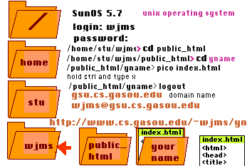

Your own homepage. Day 2.
Draw a picture.
Start
Programs
Accessories
Paint
Save as a:\yname.gif
In the following. N will stand for Netscape and [[ N ]] will mean double click on Netscape whereas [ file ] means a single click on file.
[[ N ]]
add ~wjms/ to the URL
reduce the size of Netscape
[[ telnet ]]
[ file ]
[connect]

This is the directory tree on the Sun computer, here in the mathematics and computer science department.
Anchors
/home/stu/wjms/public_html/yname > cp index.html hobbies.html
/home/stu/wjms/public_html/yname > pico hobbies.html
Change the title
Change the body and include a hobby or two
{ctrl} X
y
{<-| Enter}
pico index.html
after your name type <HR> Check out my hobbies.
Before hobbies, add <a href="hobbies.html">
After hobbies, add </a>
{ctrl} O
Check it on your web page.
Next type
<img src = "yname.gif">
{ctrl} O
Check it on your web page.
close the file and logout